Fondazione Bruno Kessler
Filippo Ziliotto
AI Researcher
I build and evaluate computer vision systems, agentic pipelines, and embodied AI systems for robotics. I’m interested in bringing this research approach to industry R&D, from building prototypes to validating them on real-world tasks.
- Computer Vision
- Multimodal AI
- Embodied AI & Robotics
- Model Evaluation
- Research Software Engineering
Publications
Newest first. Select a paper for details.
-
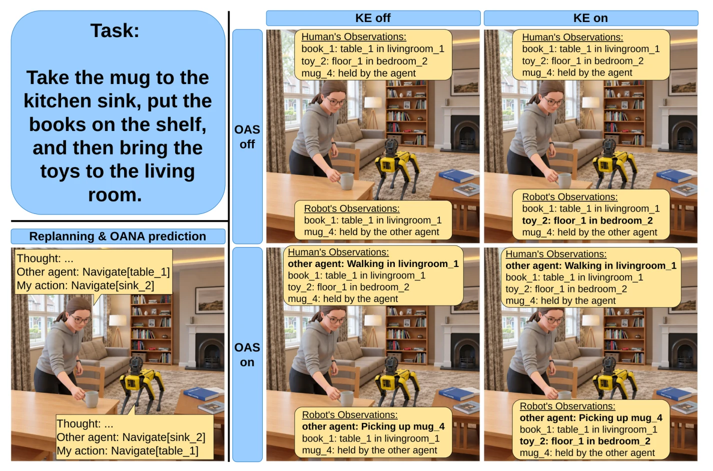
-
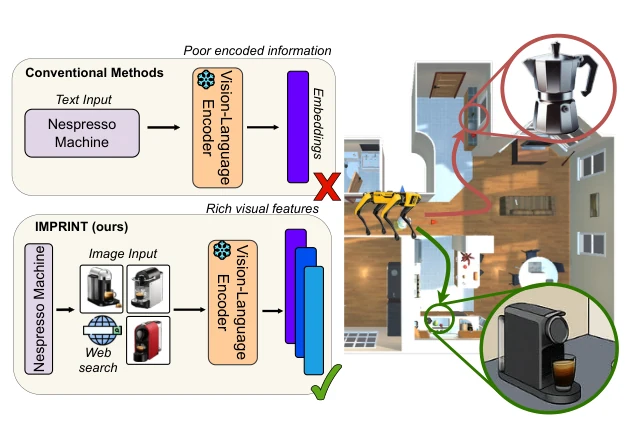
-
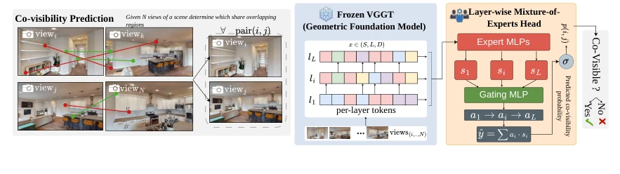
-
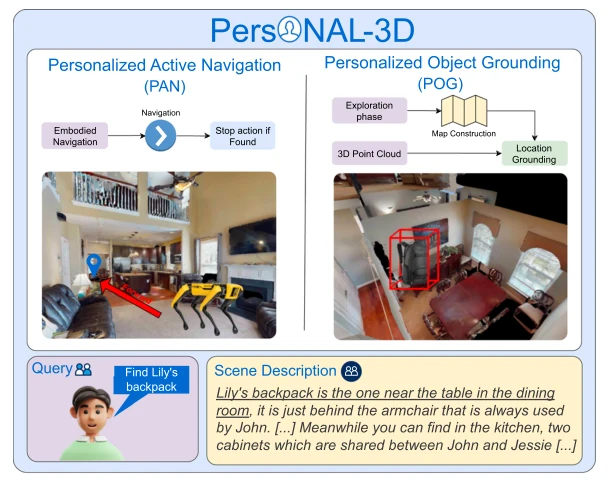
-
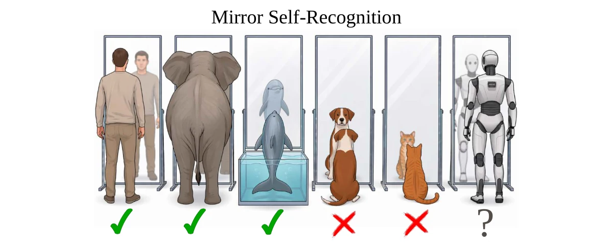
-
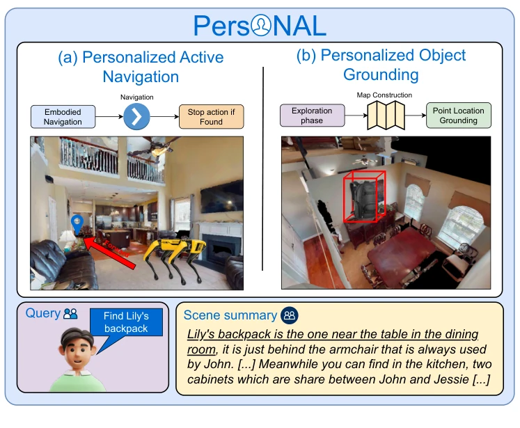
-
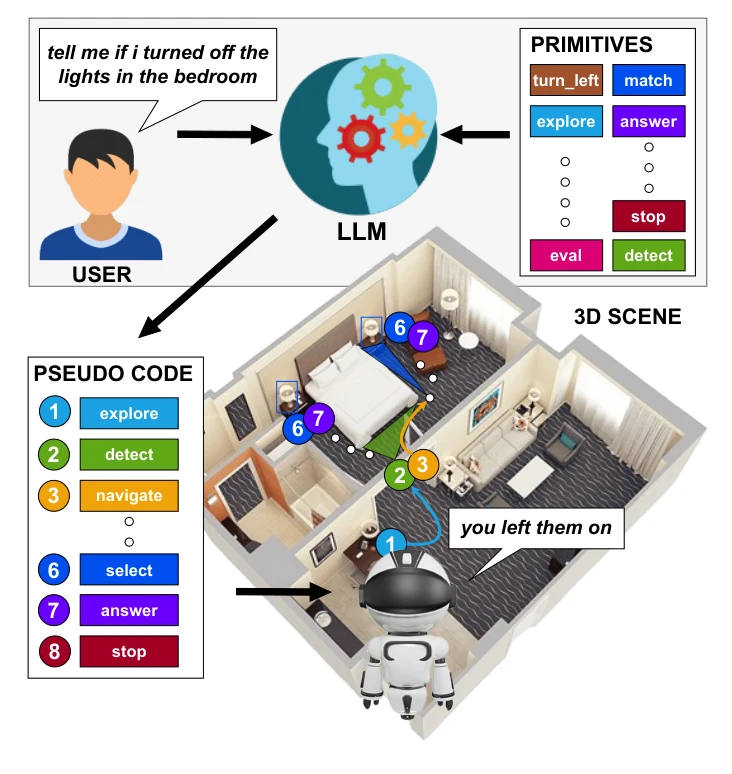
-
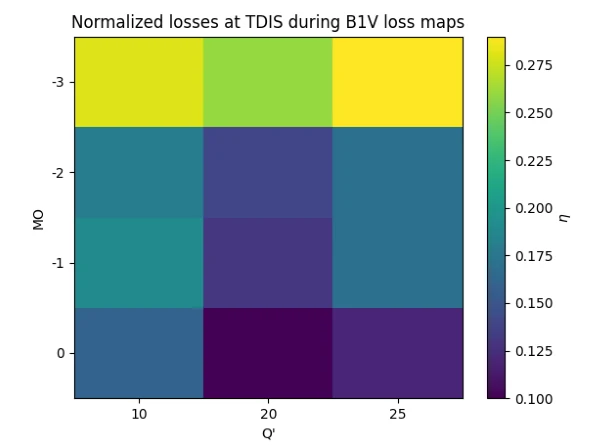
-
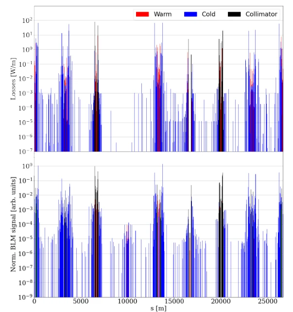
-
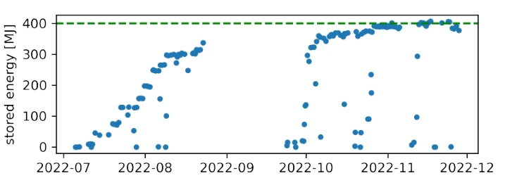
Career
Experience
-
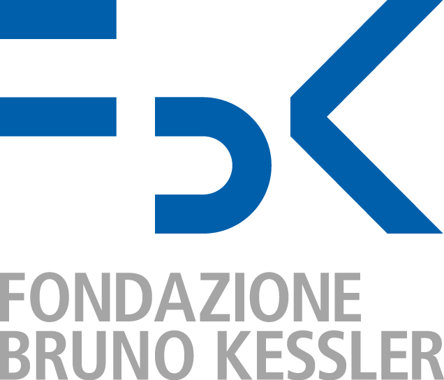
Oct 2026 – Present
AI Researcher
Fondazione Bruno Kessler
Research on LLM agents and robotics.
-
Apr – Sep 2026
Visiting Researcher
Università della Svizzera italiana
Computer vision and embodied AI.
-
2021 – 2024
Software Developer
University of Padua
Developed and maintained DIMORA, an R package for modelling how innovations spread.
-
Mar – Oct 2022
Applied Physicist
CERN
Integrated real-time analysis modules for the LHC collimation system during Run 3.
Education
-
2023 – 2026
PhD, Computer Vision & Embodied AI
University of Padua
3D perception and language-guided robotics.
-
2020 – 2023
MSc, Physics of Data
University of Padua
110/110 with honours.
-
2016 – 2020
BSc, Physics
University of Padua
Projects
Software I built outside papers.
-
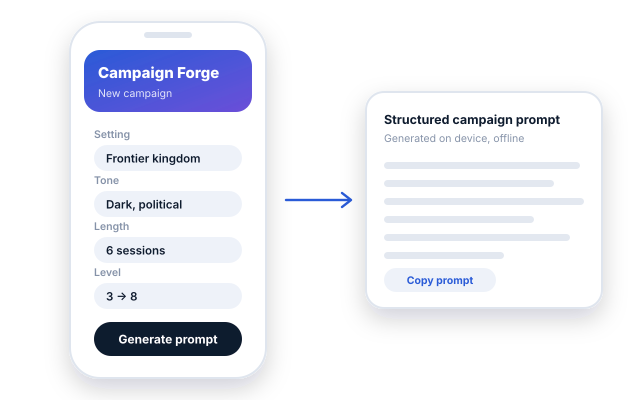
Campaign Forge
An offline D&D campaign generator for Android and iOS. Pick setting, tone and structure, and the app builds a ready-to-use campaign prompt on device, in Italian or English.
-
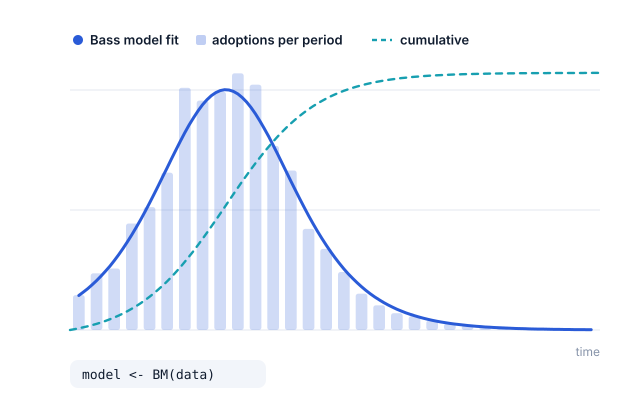
DIMORA
Statistical analysis of innovation diffusion in R: Bass, Generalized Bass, Guseo-Guidolin and UCRCD models, with fitting, diagnostics and forecasts.
-
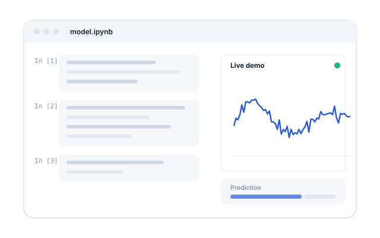
Human Data Analytics
Exam project for the Human Data Analytics course at the University of Padua: the model code and a live demo, in Jupyter notebooks.